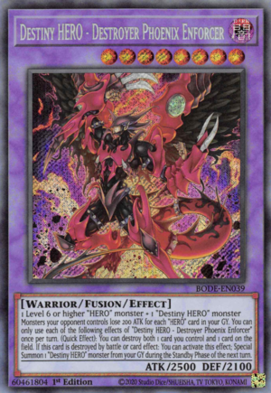
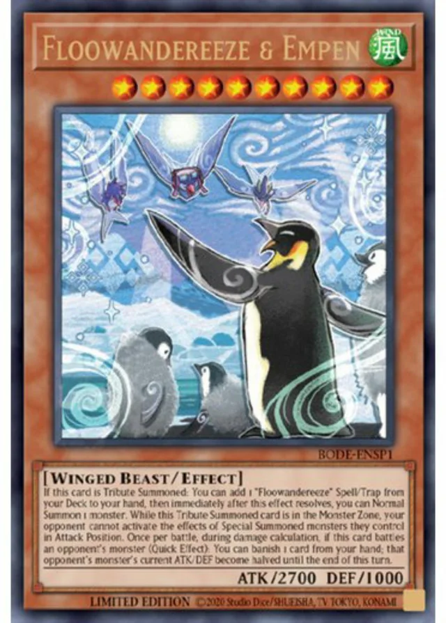
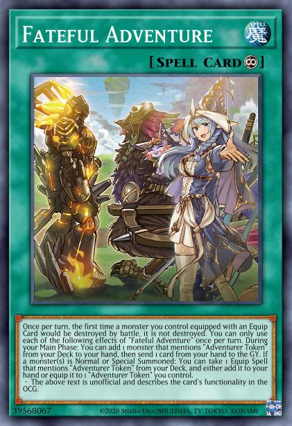

The problem
The history of Yu-gi-oh! is a long one and, owing to that, Yu-Gi-Oh! went through many changes, for better of worse. Those in charge always had a few options regarding it's future, to change as little as possible, to make big changes or, probably the worst of all, to just let it be, a small game with a short development lifespan. They opted for, probably, the best option; big, innovative changes. The problem was, that no boundaries were set. It was always easier to just ban the "problem" cards, instead of changing them, which does make some sense, but all the bans are short lived: they disappear once new, stronger cards make their entrance. And power creep was never a consideration, it seems. Thus the games has many interesting concepts, mechanics, but ultimately they do not matter, as power is the only deciding factor. What is powerful changes over time, but only because Yu-Gi-Oh's power creep is nothing if not steady and predictable.
List of problems
- Too many cards which are completely useless
- Too many cards with, all things considered, same effects, which are the current powerefull effects.
- Turn time
- The match time, or number of turns, is incredibly short, compared to the turn time. Most matches are over by turn 4 maximum.
Instead of incorporating cards into mechanics, and balancing them all together, new cards are just pumped out while old ones are forgotten and "exiled" from the game.
Goal of every Tier 0 deck is to pump out as many powerful "Boss" monsters as possibles, which are characterised by effects that negate and give protection to them.
In order to "pump out" those powerful monsters, a lot of comboing is necessary, which, in turn, takes a lot of time.
*bleep* Tier List:
These are the (current) worst offenders (in no particular order):
-
Destiny Heroe Destroyer Phoenix Enforcer
Just too simple and easy to splash in any deck, requiring only 4 cards total, 2 monster, a fusion spell, and the fusion monster itself. With incredible ease of access support, Verte Anaconda, its abillity to dodge any removal for itself or any other card with it's quick effect, it's unbelievable recursion during every standby phase, it's just one of the most annoying cards to play against.
-
Floowanderezee
Very long turns, and same long turns during OPPONENT'S turn, an "infinite" amount of normal summons, which are quite hard to deal with, and there is no logic behind that many normal summons; it's just a *bleep* jumping around the rules, so an archetype can compete with other power crept *bleep*. It. Is. Special. Summon. If. It. Is. 10th. Summon. During. The. Turn. Also stupid name.
-
Adventure
Again a small engine, which needs only one card to kickstart it all, negate, protection, non-targeting non-destruction removal, recursion. At least it needs more individual cards to function, so it can be stopped easier. Not much to say, just strong and boring to play against when it's in every deck.
The Conclusion
In conlusion *bleep* this *bleep*. Probably the most generous Online TCG on the market. Plentiful early gems and packs, enough to create several decks of player's preference, and keep building up collection through daily quests, periodical events and ladder climbing. The downside is that it can be a very frustrating game when not playin meta decks, a problem which can be solved by adding more game modes; normal (non-ranked) matches, special formats ("Pure", limited rarity, limited cards, etc.) and such. All in all, a love-hate relationship.